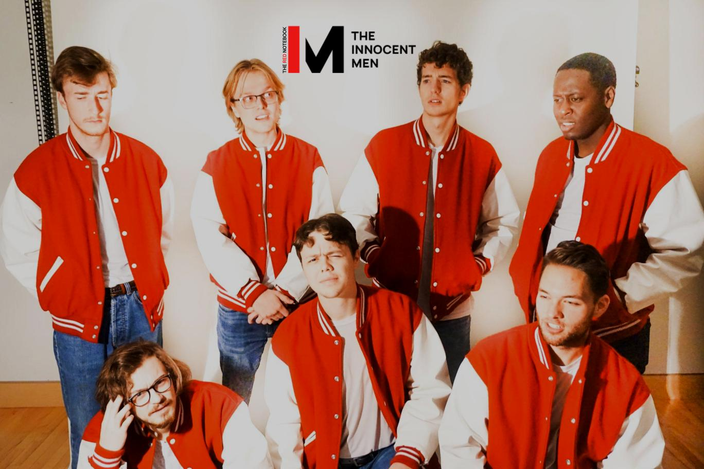

About
The Innocent Men is the University of Wisconsin - Eau Claire's premier tenor-bass a cappella group. Their missions statement is as follows:
"Inspiring others to experience and support music since 1985"
Pictures
Photo of Fall 2021 iteration of group

Promotional image from 2021 album "The Red Notebook"
Fall 2022 Repertoire
- "Fix You" by Coldplay
- "Hey, Coyote" by Mipso
- "Color Song" by Maggie Rogers
- "Eyes Closed" by Nick Cannon
- "Little Things" by One Direction
- "Man in Room 39" by The Arcadian Wild
- "The Joke" by Brandi Carlile
- "Karma Police" by Radiohead
- "Break My Heart Again" by FINNEAS
- "The Night We Met" by Lord Huron
- "Give Me Love" by Ed Sheeran
- "Home Sweet Home" by Motley Crue
- "Jealous" by Labrinth
Current Members
Listed in order of length of tenure
- Matthew St Ores
- Alex Moronge
- Spencer Keith
- Eric Augustine
- Brett Dutkowski
- Mason Kimbell
- Andrew Kroll
- Mitch Pettijohn